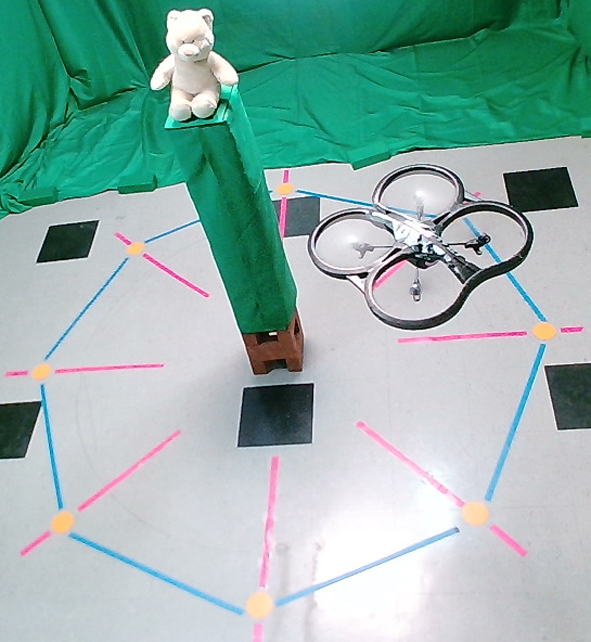

Objects Obtained With fLight (OOWL)
University of California San Diego (UCSD) Statistical Visual Computing Lab (SVCL)
March 2018 – Present
- Large-scale 3D reconstruction of real objects.
- Study of multiview embedding and pose-invariant embedding.
- Study of real-world adversarial attack.